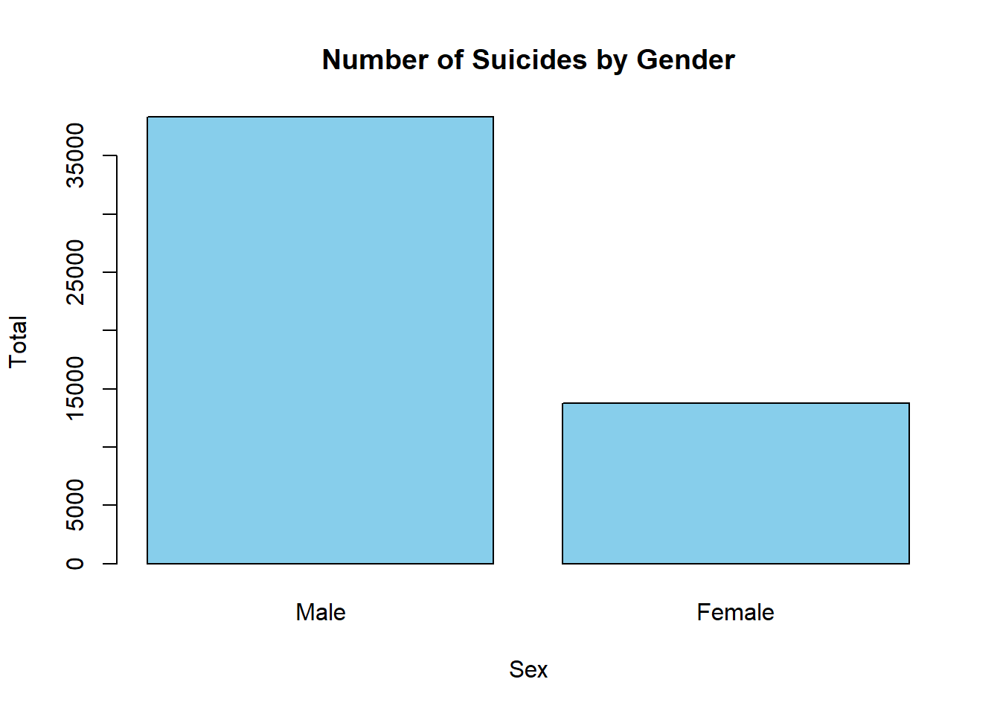

Code
library(tidyverse)
library(dslabs)
library(readxl)
data <- read_excel("C:/Users/kubil/Desktop/veri seti.xls")
save(data, file = "semicolon.RData")We used the bar plot method to compare suicides by gender regardless of age and reason. You can find the graph and the code we used below.
library(tidyverse)
library(dslabs)
library(readxl)
data <- read_excel("C:/Users/kubil/Desktop/veri seti.xls")
save(data, file = "semicolon.RData")filtered_data_male <- filter(data, Sex == "Male", `Age group`=="Total")
male = sum(as.numeric(filtered_data_male$Total))
filtered_data_female <- filter(data, Sex == "Female", `Age group`=="Total")
female = sum(as.numeric(filtered_data_female$Total))
data1 <- c(male,female)
barplot(data1, names.arg = c("Male","Female"), col = "skyblue", main = "Number of Suicides by Gender", xlab = "Sex", ylab = "Total")
-From this graph, we can observe that men are more prone to suicide compared to women.
We used the bar plot method to compare suicides by age groups regardless of gender and reason. You can find the graph and the code we used below.
filtered_data_1 <- filter(data,`Age group`=="<15", Sex == "Total")
filtered_data_2 <- filter(data,`Age group`=="15-19", Sex == "Total")
filtered_data_3 <- filter(data,`Age group`=="20-24", Sex == "Total")
filtered_data_4 <- filter(data,`Age group`=="25-29", Sex == "Total")
filtered_data_5 <- filter(data,`Age group`=="30-34", Sex == "Total")
filtered_data_6 <- filter(data,`Age group`=="35-39", Sex == "Total")
filtered_data_7 <- filter(data,`Age group`=="40-44", Sex == "Total")
filtered_data_8 <- filter(data,`Age group`=="45-49", Sex == "Total")
filtered_data_9 <- filter(data,`Age group`=="50-54", Sex == "Total")
filtered_data_10 <- filter(data,`Age group`=="55-59", Sex == "Total")
filtered_data_11 <- filter(data,`Age group`=="60-64", Sex == "Total")
filtered_data_12 <- filter(data,`Age group`=="65-69", Sex == "Total")
filtered_data_13 <- filter(data,`Age group`=="75 +", Sex == "Total")
age1 = sum(as.numeric(filtered_data_1$Total))
age2 = sum(as.numeric(filtered_data_2$Total))
age3 = sum(as.numeric(filtered_data_3$Total))
age4 = sum(as.numeric(filtered_data_4$Total))
age5 = sum(as.numeric(filtered_data_5$Total))
age6 = sum(as.numeric(filtered_data_6$Total))
age7 = sum(as.numeric(filtered_data_7$Total))
age8 = sum(as.numeric(filtered_data_8$Total))
age9 = sum(as.numeric(filtered_data_9$Total))
age10 = sum(as.numeric(filtered_data_10$Total))
age11 = sum(as.numeric(filtered_data_11$Total))
age12 = sum(as.numeric(filtered_data_12$Total))
age13 = sum(as.numeric(filtered_data_13$Total))
data2 = c(age1,age2,age3,age4,age5,age6,age7,age8,age9,age10,age11,age12,age13)
barplot(data2, names.arg = c("<15","15-19","20-24","25-29","30-34","35-39","40-44","45-49","50-54","55-59","60-64","65-69","75 +"), col = "red", main = "Number of Suicides by Age Group", xlab = "Age Group", ylab = "Total")
When looking at this graph, we observe that suicides are most common among young adults aged 20-24. We can say that as age progresses beyond 25, suicide rates tend to decrease. Another interesting result is that the age groups with the lowest suicide rates are children and the elderly.
ffiltered_data_1 <- filter(data,Year=="2002",`Age group`=="Total", Sex == "Total")
ffiltered_data_2 <- filter(data,Year=="2003",`Age group`=="Total", Sex == "Total")
ffiltered_data_3 <- filter(data,Year=="2004",`Age group`=="Total", Sex == "Total")
ffiltered_data_4 <- filter(data,Year=="2005",`Age group`=="Total", Sex == "Total")
ffiltered_data_5 <- filter(data,Year=="2006",`Age group`=="Total", Sex == "Total")
ffiltered_data_6 <- filter(data,Year=="2007",`Age group`=="Total", Sex == "Total")
ffiltered_data_7 <- filter(data,Year=="2008",`Age group`=="Total", Sex == "Total")
ffiltered_data_8 <- filter(data,Year=="2009",`Age group`=="Total", Sex == "Total")
ffiltered_data_9 <- filter(data,Year=="2010",`Age group`=="Total", Sex == "Total")
ffiltered_data_10 <- filter(data,Year=="2011",`Age group`=="Total", Sex == "Total")
ffiltered_data_11 <- filter(data,Year=="2012",`Age group`=="Total", Sex == "Total")
ffiltered_data_12 <- filter(data,Year=="2013",`Age group`=="Total", Sex == "Total")
ffiltered_data_13 <- filter(data,Year=="2014",`Age group`=="Total", Sex == "Total")
ffiltered_data_14 <- filter(data,Year=="2015",`Age group`=="Total", Sex == "Total")
ffiltered_data_15 <- filter(data,Year=="2016",`Age group`=="Total", Sex == "Total")
ffiltered_data_16 <- filter(data,Year=="2017",`Age group`=="Total", Sex == "Total")
ffiltered_data_17 <- filter(data,Year=="2018",`Age group`=="Total", Sex == "Total")
ffiltered_data_18 <- filter(data,Year=="2019",`Age group`=="Total", Sex == "Total")
ffiltered_data_19 <- filter(data,Year=="2020",`Age group`=="Total", Sex == "Total")
ffiltered_data_20 <- filter(data,Year=="2021",`Age group`=="Total", Sex == "Total")
ffiltered_data_21 <- filter(data,Year=="2022",`Age group`=="Total", Sex == "Total")
year1 = sum(as.numeric(ffiltered_data_1$Total))
year2 = sum(as.numeric(ffiltered_data_2$Total))
year3 = sum(as.numeric(ffiltered_data_3$Total))
year4 = sum(as.numeric(ffiltered_data_4$Total))
year5 = sum(as.numeric(ffiltered_data_5$Total))
year6 = sum(as.numeric(ffiltered_data_6$Total))
year7 = sum(as.numeric(ffiltered_data_7$Total))
year8 = sum(as.numeric(ffiltered_data_8$Total))
year9 = sum(as.numeric(ffiltered_data_9$Total))
year10 = sum(as.numeric(ffiltered_data_10$Total))
year11 = sum(as.numeric(ffiltered_data_11$Total))
year12 = sum(as.numeric(ffiltered_data_12$Total))
year13 = sum(as.numeric(ffiltered_data_13$Total))
year14 = sum(as.numeric(ffiltered_data_14$Total))
year15 = sum(as.numeric(ffiltered_data_15$Total))
year16 = sum(as.numeric(ffiltered_data_16$Total))
year17 = sum(as.numeric(ffiltered_data_17$Total))
year18 = sum(as.numeric(ffiltered_data_18$Total))
year19 = sum(as.numeric(ffiltered_data_19$Total))
year20 = sum(as.numeric(ffiltered_data_20$Total))
year21 = sum(as.numeric(ffiltered_data_21$Total))data3 = c(year1,year2,year3,year4,year5,year6,year7,year8,year9,year10,year11,year12,year13,year14,year15,year16,year17,year18,year19,year20,year21)
barplot(data3, names.arg = c("2002","2003","2004","2005","2006","2007","2008","2009","2010","2011","2012","2013","2014","2015","2016","2017","2018","2019","2020","2021","2022"), col = "yellow", main = "Number of Suicides by Year", xlab = "Year", ylab = "Total")
fffiltered_data_1 <- filter(data,`Age group`=="Total", Sex == "Total")
cause1 = sum(as.numeric(fffiltered_data_1$Illness))
cause2 = sum(as.numeric(fffiltered_data_1$`Family incompatibility`))
cause3 = sum(as.numeric(fffiltered_data_1$`Economic problems`))
cause4 = sum(as.numeric(fffiltered_data_1$`Business failure`))
cause5 = sum(as.numeric(fffiltered_data_1$`Emotional relationship and not marrying the person wanted`))
cause6 = sum(as.numeric(fffiltered_data_1$`Educational failure`))
cause7 = sum(as.numeric(fffiltered_data_1$Other))
unknown <- ifelse(is.na(as.numeric(fffiltered_data_1$Unknown)),0,as.numeric(fffiltered_data_1$Unknown))
cause8 = sum(unknown)
data4 = c(cause1,cause2,cause3,cause4,cause5,cause6,cause7,cause8)barplot(data4, names.arg = c("Illness","Family","Economy","Business","Emotional","Educational","Other","Unknown"), col = "brown", main = "Number of Suicides by Reason", xlab = "Suicide Reason", ylab = "Total",cex.names=0.72)